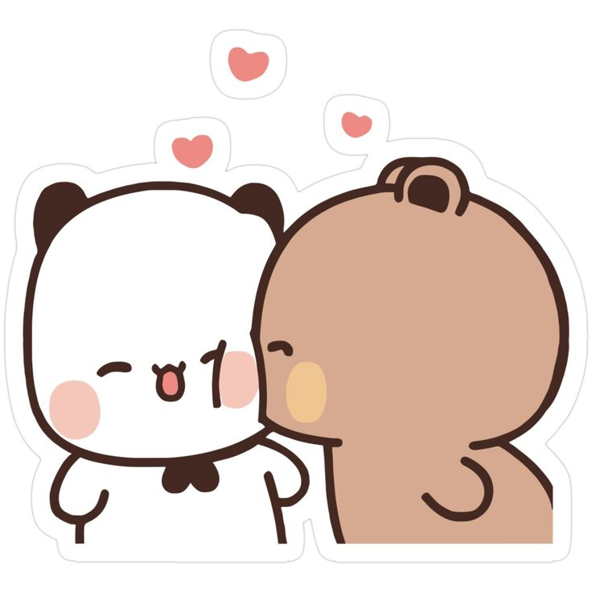
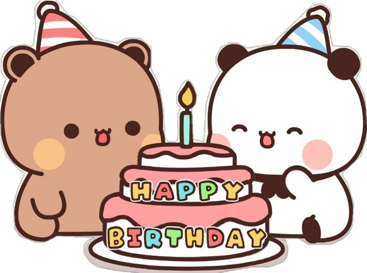
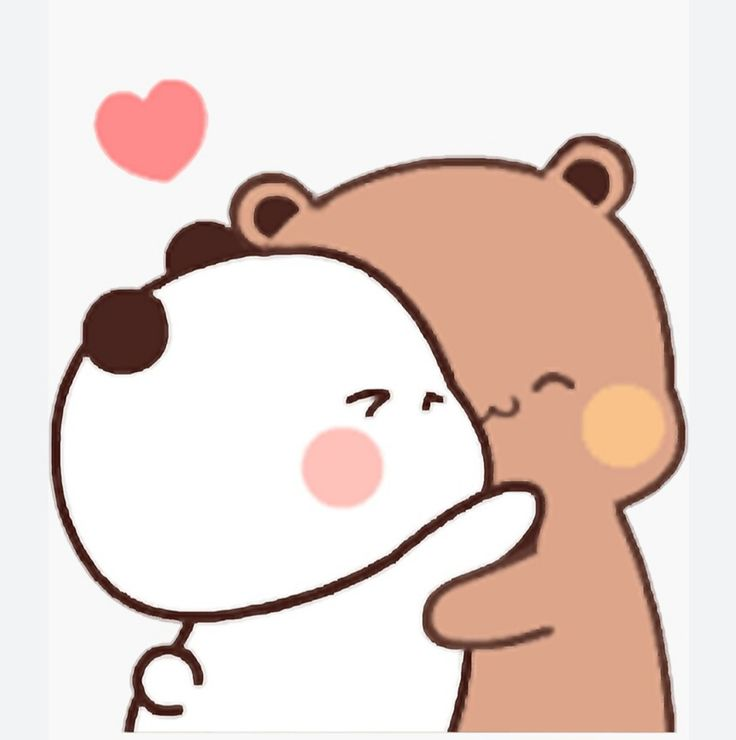
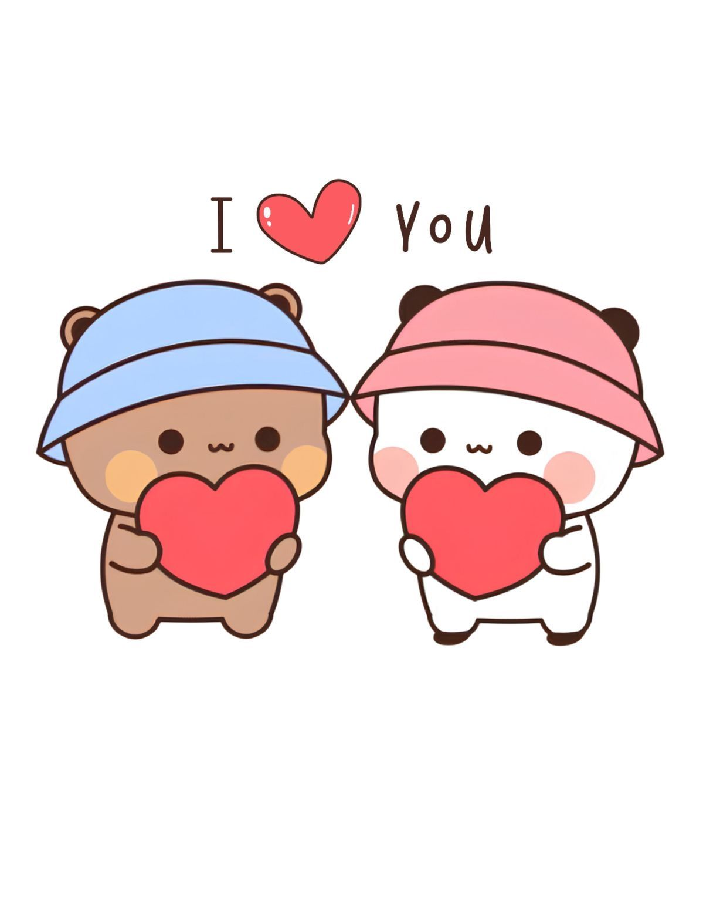

Wie fange ich an...? Nun, ich schätze, da, wo alles begann, oder?
Emma, ich möchte dir so viele Dinge sagen... Worte reichen nicht aus, um auszudrücken, wie glücklich es mich macht, an diesem so wichtigen Tag an deiner Seite zu sein. Es ist unglaublich, es fühlt sich an, als wäre es erst gestern gewesen, als du gerade erst 17 geworden bist, haha. Deshalb macht es mich so froh zu sehen, wie du heute ein weiteres Lebensjahr vollendest.
Ich möchte, dass du weißt, wie sehr ich es schätze, dass du in meinem Leben bist, und ich würde dich am liebsten ganz fest umarmen, um dir zu zeigen, wie viel du mir bedeutest. Denn trotz allem warst du eines der besten Dinge, die mir je im Leben passiert sind, und das schätze ich ungemein. So sehr, dass du die Wahrnehmung von mir selbst verändert hast: Jetzt bin ich mir bewusster, wer ich bin, was ich will, und ich akzeptiere mich so, wie ich bin. Früher war das etwas, das mir allein schwerfiel, deshalb werde ich dir niemals genug dafür danken können, was du in nur einem Jahr für mich getan hast.
Im Ernst, du bist zum wichtigsten Menschen in meinem Leben geworden. Deshalb möchte ich dir diese kleine Aufmerksamkeit schenken (eigentlich wollte ich dir einen Brief schicken, aber das werde ich eines Tages tun, das verspreche ich dir 😁). Es mag nicht nach viel aussehen, aber es ist etwas, das ich für dich gemacht habe, und ehrlich gesagt hat es mir sehr viel Freude bereitet, weil es für dich ist...
Ich wünsche dir alles Gute zum Geburtstag, MY BEAUTIFUL STAR 🥰⭐.
P.D: P.S.: Ich hoffe, noch viele weitere Jahre mit dir zu verbringen und vor allem deine zukünftigen Geburtstage gemeinsam mit dir persönlich zu genießen. 😚
ATT: Dein Hombrecito ❤️